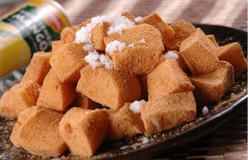
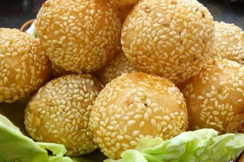

 ◆端午节是吉林省延边朝鲜族人民隆重的节日。这一天最有代表性的食品是清香的打糕。打糕，就是将艾蒿 与糯米饭，放置于独木凿成的大木槽里，用长柄木棰打制而成的米糕。这种食品很有民族特色，又可增添节 日的气氛。
◆不少地方过端午节时还用米粉或面粉发酵与艾蒿一起蒸馍馍。艾中含有多种挥发油，具有芳香气味，可驱虫 杀菌，对多种细菌及某些皮肤真菌有抑制作用，所以古代在端午除病驱瘟，无论食还是用，艾均必不可少
 ◆煎堆。福建晋江地区，端午节家家户户还要吃“煎堆”。所谓煎堆，就是用面粉、米粉或番薯粉和其他配料 调成浓糊状，下油锅煎成一大片。
◆相传古时闽南一带在端午节之前是雨季，阴雨连绵不止，民间说天公穿了洞，要“补天”。端午节吃了“煎 堆”后雨便止了，人们说把天补好了。这种食俗由此而来。